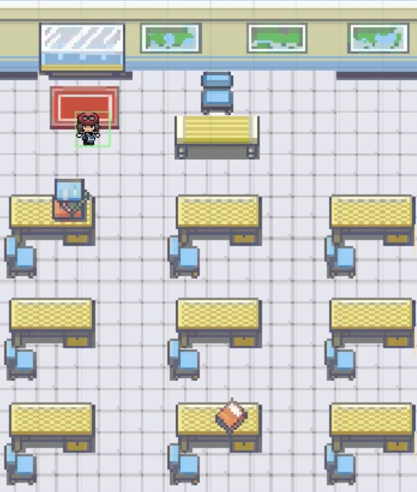
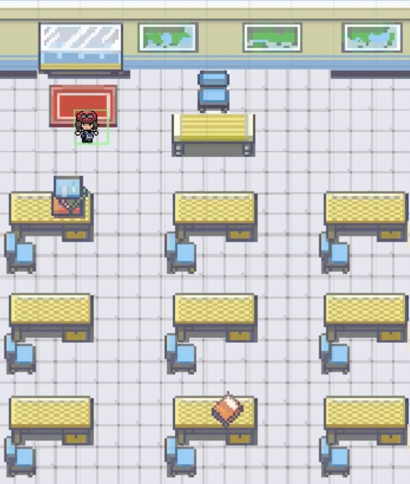

Projects
Megan's Web Conservatory
Personal Project
Since my fascination for botany began I have wanted to combine that passion with my technical skills. My web conservatory was my first foot in the door. This project serves several purposes. As my house plant collection has grown I have found a need to showcase, catalog, and manage my houseplants. After hours of research into botany in conjunction with my personal experience, I have created a profile for each of my house plants. Every profile contains key care information such as watering, light, and humidity. The profiles also share interesting information on toxicity, expected growth, and the plant's origins. While the website acts as an online catalog it also doubles as a plant identification system. Each of my house plants has an identification tag containing a QR code. When friends or family have questions about a house plant or possibly want one themself, they simply scan the tag, and the plant profile is presented.
The technical architecture behind the sites implements a CI/CD pipeline from my GitHub repo to an S3 bucket. The architecture behind the website is rather simple, as showcased in the diagram below. The simplistic architecture is by design as it allows for straightforward support and modifications. The code behind the project is a blend of HTML, CSS, and JavaScript. Although this website is currently static, behind the scenes it is getting a makeover. I am in the process of adding each plant profile to a DynamoDB instance. I have created a lambda function to query the DB which can be called through an API gateway. Once I have added all plant profiles to the DynamoDB instance I will rewrite the code to pull from the API on page load. While the cloud architecture, website, and QR are nothing groundbreaking in terms of computing, what I would like to focus on is the application of the technology. Having the option to pull up a plant profile with a click of a button makes accessing information simple and easy. This is what I find as the most important part of the project. Technology is only as powerful as how you choose to use it. Using technology to help others learn is where my passions truly lie!
- AWS DynamoDB
- AWS S3
- AWS Lambda
- AWS API Gateway
- HTML/CSS/JavaScript
- GitHub
- AWS Route 53
- AWS Code Pipeline

CareerResume.org
Personal Project
November 2020 - Present
Every developer needs a way to easily showcase some of their professional abilities. This website accomplishes just that for me! When learning more about AWS services I found how extremely simple to host and support a website, so the cloud became the home of my online resume. The current architecture behind the website is rather simple, as showcased in the diagram. The original code is from HTML5 UP! which provides amazing web templates that are free for both personal and commercial use. So I repurposed their code for my purposes and learned a lot about web development along the way. Using Route 53 for domain management and Code Pipeline for CI/CD deployments creates straightforward support of the site.
Raspberry Pi Projects
Some of the projects I have enjoyed the most have involved branching out from the normal software technology stack I use and working with my hands! An easy and extremely affordable way I do that is by building Raspberry Pi projects. I will not claim the software in either of these projects is supremely innovative or unique. In fact, I did not write the majority of the code myself. Like any wise developer, I believe there is no point in reinventing the wheel. An important part of computing is learning how other developers' code works and optimizing it for your purposes. I found great joy in building these projects and I use them frequently.
Crypto Currency Price Ticker
Personal Project
The original code for this project was generously posted by user taoteh1221 on GitHub. This user also has great documentation on installation for those who are unfamiliar. I made modifications to make the application compatible with the 7-inch touchscreen Raspberry Pi Display. I also made changes to display the prices of cryptos currently in my portfolio or that I have my eye on. I used TinkerCad to design legs and a case for my display screen. To print my designs I used an Ultimaker 3D printer and PLA plastics. This price ticker now sits on my desk so I can easily monitor crypto prices while workign.
- Yahoo Finance API
- Raspberry Pi 3 Model B
- 7-Inch Raspberry Pi Touchscreem
- Ultimaker (3D Printer)
- TinkerCAD
- Linux\Unix
Magic Mirror with Custom Built Frame
Personal Project
Magic mirrors are one of the most popular computing projects out there. They are a great first step for many developers into the world of Raspberry Pis. The software I selected was posted by user MichMich on GitHub. This project earn ranks with my others primarily because of the carpentry and computer hardware experience I gained. At the start of this project, I was skeptical of my ability to learn about the hardware with no documentation. Those doubts vanished as soon as I began deconstructing the old LED TV from my childhood bedroom. I embedded the hardware for the TV directly into the mirror frame to take advantage of the existing components such as a button panel, input panel, and speaker system. This project currently lives in my powder room and is a great reminder that I am capable of more than I know, I just have to try!
Fresh Air Grand Rapids
Grand Valley State University Capstone Project
Awareness of the environment's effect on our health has grown exponentially over time. Air quality is one of the largest concerns. Even though air quality has a constant effect on our health, accurate neighborhood-specific data is not available to the public. Without this data, we can easily overlook an environmental factor that may disproportionately affect the health of minority communities. This issue led us to the development of our senior capstone project. The goal of our project was to create a community-focused, educational, web application designed to inform Grand Rapids residents of air quality metrics. We have several air quality sensors placed strategically around the city of Grand Rapids with the help of our sponsors. The sensors collect and store the data locally until a network connection, where it is then sent to an AWS DynamoDB. We cleaned, processed, and analyzed the data using an AWS Lambda. On the front end, the data is presented as a heat map that displays the pollution levels in each neighborhood of the city, as well as the sensor locations. An additional feature on the web app is a tab dedicated to community access to the air quality data we collect. This data is downloaded as a CSV with the click of a button. Our project also includes a community outreach program that sends emails and texts to registrants about relevant air quality conditions in their neighborhood or areas of concern in the city. The goal of our project is to provide this data in an easy-to-use manner that is accessible to all.
- Amazon DynamoDB
- Python
- Django
- Amazon Lambda
- HTML/CSS/JavaScript
Automated Car Identification System Using Tensorflow
Grand Valley State University Project
The use case for our specific classifier is a Chevrolet service station. We could use our AI to identify the next car in line to be serviced and pull up vehicle data before the mechanic even gets to the car. Having knowledge of the next vehicle can help so that servicing machines can automatically adjust to focus on that vehicle. Examples include switching the types of oil being pumped through the valve, having an order list generate based off of the vehicle’s parts, having recall information show automatically, and general information regarding maintenance frequency. To bring this idea to fruition, it took searching for a data set, creating a data manipulation script, creating and training our model, and lastly building the UI. Tensorflow makes it extremely easy to create and train a neural network for image classification. Its ease of use stems from its incorporation of the Inception V3 neural network into new projects. Inception V3 is a CNN that took about two weeks(on a computer with 8 GPUs) to train on 1.2 million images. With the time constraints of our project, using Inception V3 provides us with a more accurate base instantly. Also, Tensorflow allowed us to work with complex deep learning techniques on a higher level. After we grasped the concepts of Tensorflow with Inception V3, we were able to dive deeper into the lower level operations written in the code. Being that the interface was not the prime concern of our project, we used PyQt with Designer to spin up a working demo. We also made our GUI very modular so that our Tensorflow backend can be retrained and applied to different use cases. In the retrain tab on our GUI, you can select a different dataset to train on. After this model is trained, the new AI model will automatically work with our classification front end. As a result, we’ve made image classification a ‘point-and-click’ operation, which opens the division of AI up to more people than ever.
 

GV' Mon
Grand Valley State University Project
For this project, we created a shameless Pokémon knockoff with GVSU flare. This 2D game follows your many adventures and battles at GVSU. The main goal of the game is the same as college, to graduate. Challenge other students and professors on campus to gain credits in order to complete your degree. Explore the campus while listening to the tranquil sounds from the original Pokemon games and see what you can find! The game opens up with an introduction from the sprite version of T. Haas (GVSU President) welcoming the player to campus. After your orientation from T. Haas, you can explore the landscape of our lovely campus, enter many of the buildings, and battle a variety of characters you encounter along the way. GV Mon is an open-world game, meaning the user can go anywhere at any time. As you explore the map, music will vary by location. Each battle you win ups your health and attack strength as well as rewarding you with credits. Once you acquire enough credits from winning your battles you can graduate!
- Unity Game Engine
- C#
- StyleCop
- Visual Studios
- MonoBehavior and ReSharper
- GhostDocumentation
- GitHub